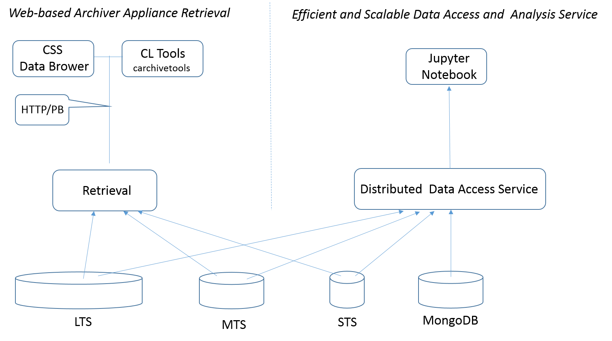

Future Directions¶
Efficient data management and processing systems are essential tools in the commissioning and operation of accelerator facilities and large scientific experiments. Analysis of historical data strongly facilitates the troubleshooting process, detection and study of composite behavior patterns, comparison and design of different operational scenarios, and many other operational tasks. As of today, the EPICS Archiver Appliance has demonstrated reliable service for storing and monitoring the EPICS 3 scalar and waveform records of various accelerator and experimental devices. The data analysis however is limited by the Web-oriented Apache Tomcat technology. This can be significantly enhanced with an additional efficient scalable service as shown in the Figure. Furthermore, this new service will facilitate the development of composite applications using the Archiver and other (e.g., Databroker) interfaces.
{kind=link}
One of the most straightforward implementaions can be developed with the Spark technology as was demonstrated by the CERN team for upgrading the CERN Accelerator Logging Service.